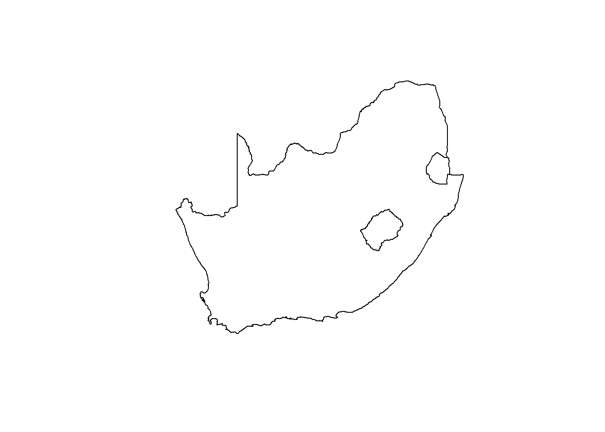
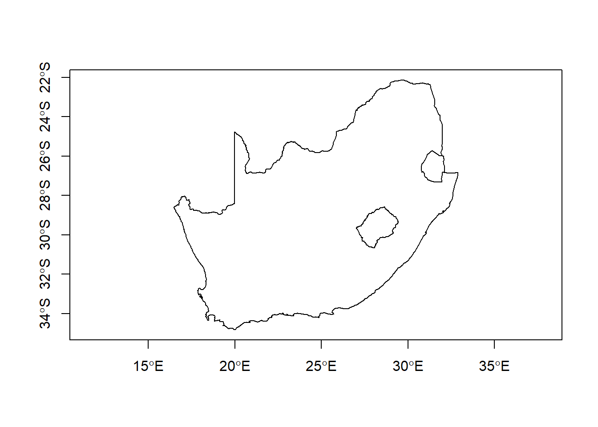
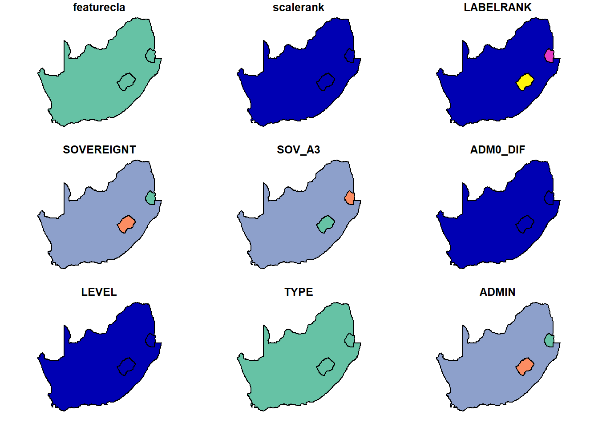
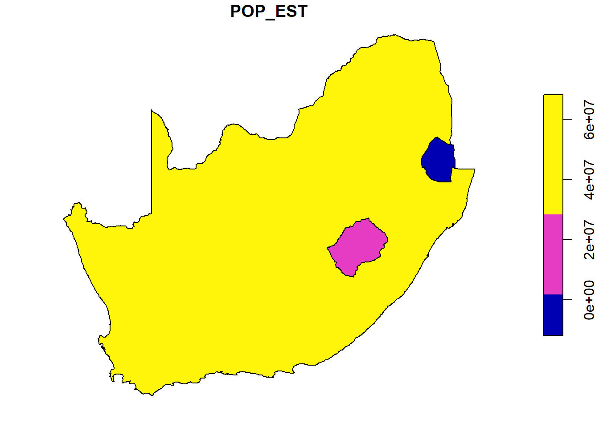

Chapter 2 Part 2
2.1 Reading in a shapefile
Now that we have access to the sf package, we’ll read in a shapefile (south_africa_border.shp) with the borders of the countries in southern Africa: South Africa, Lesotho, and Eswatini.
#Import the south_africa_border.shp shapefile.
southernAfrica<-st_read("south_africa_border.shp")## Reading layer `south_africa_border' from data source
## `C:\Users\bdav_\Dropbox\Teaching\Spatial R Short Course\Bookdown\Exercise1\south_africa_border.shp'
## using driver `ESRI Shapefile'
## Simple feature collection with 3 features and 94 fields
## Geometry type: POLYGON
## Dimension: XY
## Bounding box: xmin: 16.46998 ymin: -34.82195 xmax: 32.89308 ymax: -22.12645
## Geodetic CRS: WGS 84This dataset comes from Natural Earth, and it includes 95 variables about these 3 countries, including population, GDP, country names in other languages, etc. If you wanted to take a look at it in more detail, you could use str(southernAfrica), but you can also take my word for it.
2.2 Plotting spatial data
Next we’ll use plot and st_geometry to plot the borders.
#Plot geometry
plot(st_geometry(southernAfrica))
While we all probably have a sense of where southern Africa is, it’s usually a good idea to include some information about the geography. We’ll learn more about making maps later, but for now we can just include the axes to give us latitude and longitude.
#Plot geometry with axes
plot(st_geometry(southernAfrica),axes=T)
If we want to see the information in the dataset, we could just use the plot function by itself.
plot(southernAfrica)## Warning: plotting the first 9 out of 94 attributes; use max.plot = 94 to plot
## all
You may notice that this gives us the first nine variables (or columns) in the dataset. Since a vector dataset might contain hundreds of variables, the sf package will stop after 9 plots by default so that R doesn’t freak out.
You may also notice that for many of these, there’s no differences between these countries. It’s probably more useful to target a specific variable of interest. For example, if we want to access the population estimate for each country and plot that, we first need to figure out which variable corresponds to the population. You can get a list of variable names using colnames or just by typing southernAfrica$ into the command line.
colnames(southernAfrica)## [1] "featurecla" "scalerank" "LABELRANK" "SOVEREIGNT" "SOV_A3"
## [6] "ADM0_DIF" "LEVEL" "TYPE" "ADMIN" "ADM0_A3"
## [11] "GEOU_DIF" "GEOUNIT" "GU_A3" "SU_DIF" "SUBUNIT"
## [16] "SU_A3" "BRK_DIFF" "NAME" "NAME_LONG" "BRK_A3"
## [21] "BRK_NAME" "BRK_GROUP" "ABBREV" "POSTAL" "FORMAL_EN"
## [26] "FORMAL_FR" "NAME_CIAWF" "NOTE_ADM0" "NOTE_BRK" "NAME_SORT"
## [31] "NAME_ALT" "MAPCOLOR7" "MAPCOLOR8" "MAPCOLOR9" "MAPCOLOR13"
## [36] "POP_EST" "POP_RANK" "GDP_MD_EST" "POP_YEAR" "LASTCENSUS"
## [41] "GDP_YEAR" "ECONOMY" "INCOME_GRP" "WIKIPEDIA" "FIPS_10_"
## [46] "ISO_A2" "ISO_A3" "ISO_A3_EH" "ISO_N3" "UN_A3"
## [51] "WB_A2" "WB_A3" "WOE_ID" "WOE_ID_EH" "WOE_NOTE"
## [56] "ADM0_A3_IS" "ADM0_A3_US" "ADM0_A3_UN" "ADM0_A3_WB" "CONTINENT"
## [61] "REGION_UN" "SUBREGION" "REGION_WB" "NAME_LEN" "LONG_LEN"
## [66] "ABBREV_LEN" "TINY" "HOMEPART" "MIN_ZOOM" "MIN_LABEL"
## [71] "MAX_LABEL" "NE_ID" "WIKIDATAID" "NAME_AR" "NAME_BN"
## [76] "NAME_DE" "NAME_EN" "NAME_ES" "NAME_FR" "NAME_EL"
## [81] "NAME_HI" "NAME_HU" "NAME_ID" "NAME_IT" "NAME_JA"
## [86] "NAME_KO" "NAME_NL" "NAME_PL" "NAME_PT" "NAME_RU"
## [91] "NAME_SV" "NAME_TR" "NAME_VI" "NAME_ZH" "geometry"There’s a lot of variables here, but once we know the name of the variable we are interested in, we can plot this using brackets to include the variable name:
plot(southernAfrica['POP_EST'])
This shows us that, unsurprisingly, there are population differences between South Africa, Lesotho, and Eswatini. But more importantly, it shows that you can import and explore this data using a few lines of code.
2.3 Try it yourself!
Add some code to see if you can do the following with the southern Africa data:
- Figure out which variable/column gives the gross domestic product (GDP) estimate for each country
- Plot the GDP data with latitude/longitude axes
- Can you think of a way to plot the population estimate and GDP side by side (with axes)?